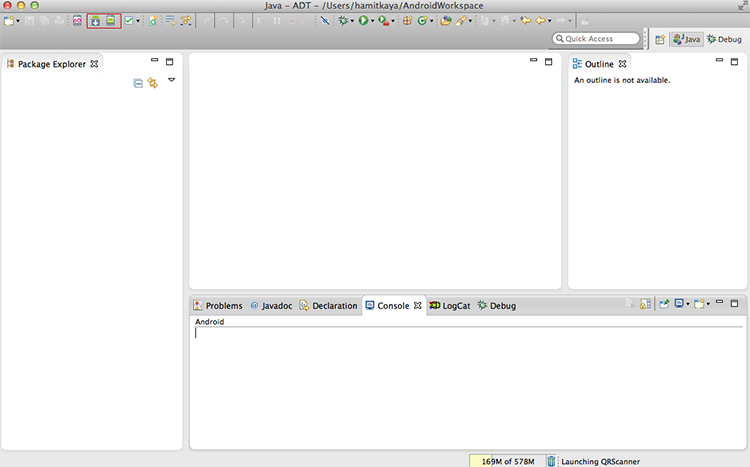
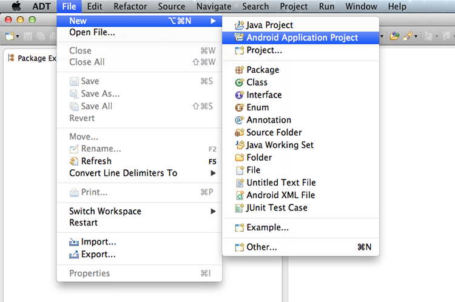
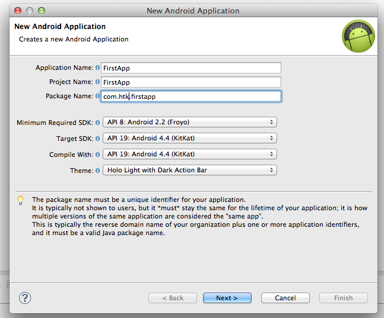
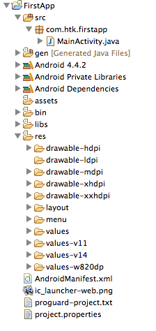
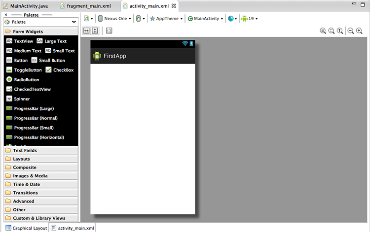
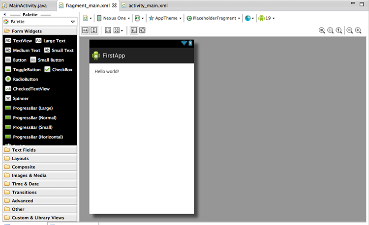
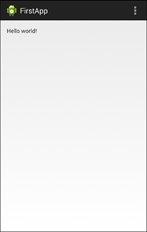

Android Temelleri
Merhabalar, Java ile Android uygulamaları temelleri hakkında bir giriş yapmak istiyorum. Bunun için işletim sisteminize uygun JDK ve Android SDK’ yı indirmeniz gerekmektedir. Windows ve Mac OSX için JDK ve JRE’ yi buradan indirebilirsiniz.
Ubuntu veya Linux Mint için ise:
sudo apt-get install python-software-properties
sudo add-apt-repository ppa:webupd8team/java
sudo apt-get update
sudo apt-get install oracle-java8-installer
komutlarını kullanabilirsiniz.
Kurulumun ardından Android SDK’ yı ve IDE’ mizi indirmemiz gerekmekte. Buradan Eclipse ile Android SDK’ yı indirebiliriz. İsterseniz Eclipse yerine IntelliJIdea tabanlı Android Studio’ yu da deneyebilirsiniz, fakat hala alpha aşamasında olduğu için ben tercih etmiyorum.
Eclipse

Eclipse’ i açtığımızda sol üstte işaretli 2 ikonumuzu göreceğiz. Bunlardan soldaki Android SDK Manager, yani farklı versiyonlar için Android SDK yüklemeleri yapabileceğimiz kısımdır. Sağ taraftaki ise Android Virtual Device Manager’ dır. Burada da emulatör ile Android bir cihaz oluşturup, testlerimizi onun içinde yapabiliriz. Fakat maalesef bu araç çok yavaş olduğu için GenyMotion adlı 3. parti emulatörü kullanmanızı öneririm. Standart özellikleri ücretsiz gelmektedir ve standart emülatöre göre çok daha hızlıdır. (Tabii ki en iyi sonucu gerçek bir cihaz üzerinden alırsınız). GenyMotion’ ı buradan üye olduktan sonra indirebilirsiniz.
İlk uygulamayı oluşturma
İlk Android uygulamamızı oluşturmak için File > New > Android Application Project seçiyoruz.

Sonrasında uygulamamız için gerekli bilgileri giriyoruz.

Application name: Play Store’ da gözükecek uygulama adıdır
Package name: Class’ larımızı tutacak genel paket adıdır. Genellikle ‘com.sirket_adi.uygulama_adi’ olarak belirlenir.
Minimum Required SDK ve Target SDK, uygulamamızın Android’ in hangi sürümlerinde çalışacağını belirtir. Target SDK, en son çıkan SDK seçilmelidir.
Sonraki pencerelerde varsayılan değerler korunarak proje oluşturma işlemi tamamlanır.
Klasörler

İlk uygulamamızı oluşturduk ve resimdeki gibi klasörler karşımıza geldi. Burada haşır neşir olacağımız kısımlar, SRC ve RES klasörleridir. Genel olarak klasörlerin görevleri şunlardır:
Gen, hiçbir zaman müdahale etmemeniz gereken, Android’ in kendi değişkenlerini adresleyip, değişkenler halinde tuttuğu class’ ları içeren klasördür.
Bin, derlenmiş class’ larımızı ve çalıştırılabilir apk dosyamızı içeren klasördür.
Libs, uygulamaya dahil edilen kütüphaneler bu klasördedir. (Android SDK gibi)
RES, asset’ lerimizi tutmak içindir (resimler, arayüz dosyalarımız, rakamsal veya string değerlerimiz vs.)
Drawable, resimlerimizin, stil dosyalarımızın bulunacağı klasördür. Yanlarındaki hdpi, ldpi, mpdi, xhdpi ise ekran boyutlarını belirtir. Bu şekilde uygulamaya özel arayüz tasarlayabilirsiniz.
Örneğin 10bir tabletteki resmin boyutu ve çözünürlüğü 3
bir telefondakinden büyük olmalıdır. Bunları burada ayarlayabilirsiniz.
Layout, arayüz xml’ lerini saklayan klasördür. Bu klasörün yanına istediğiniz gibi layout_hdpi, layout_ldpi gibi klasörler ekleyerek arayüzleri özelleştirebilirsiniz.
Menu, uygulamanızda görünecek menüleri tutan klasördür
Values, uygulama içerisinde kullanacağımız değerleri tutacağımız klasördür. Arayüzdeki margin değerlerinden buton text’ lerine kadar herşeyi burada tutabilirsiniz. values-en, values-tr şeklinde klasörlerle sadece içerisindeki değerleri değiştirerek telefonun diline göre uygulamanın dilini değiştirebilirsiniz.
Bunların dışında içli dışlı olacağımız bir başka dosya, AndroidManifest.xml dosyasıdır. Bu dosya içerisinde uygulama ayarlarımız, izinlerimiz, aktivitelerimiz gibi bilgiler bulunmaktadır.
Bu bilgilerin ardından gelelim layout klasörümüze:
Layout klasörünün içine girdiğimiz zaman 2 adet dosya oluştuğunu görüyoruz. activity_main.xml ve fragment_main.xml bunlar arayüz dosyalarımızdır. (Eski SDK’ ya sahip olan kullanıcılarda sadece activity_main.xml olacaktır.) Ne işe yaradıklarını açıklayalım. Android’ de bir çok ekran sistemi vardır. Bunlara Activity denir. Uygulamada işlem yaptığınız her ekranı bir activity olarak düşünebilirsiniz. Bunun yanısıra API 11(Android 3.0)‘ den sonra Fragment yapısı ek olarak getirildi. Bunu da Activity içerisinde çalışan bir arayüz ya da bir işlemi temsil eden küçük activity parçaları olarak düşünebiliriz. Bir container activity içerisinde birden fragment’ leri tetikleterek çağırmak, hem performans, hem de tekrar kullanılabilirlik açısından daha verimlidir. Tabi fragment’ ler de activity’ den bağımsız değildir. Onların yaşam döngüleri de onu içeren aktiviteye bağlıdır. Activity kapandığı zaman içerdiği fragment de kapanır.
Bu kısa ön bilgiden sonra tahmin edebileceğiniz gibi activity_main.xml, fragment’ i tutacak container activity arayüzü iken; fragment_main.xml ise, içerisinde çalıştırılacak fragment arayüzüdür.


Layout görünümü içerisinde arayüzü 2 farklı şekilde görüntüleyebiliriz. Graphical Layout: Arayüzün olduğu gibi gösterildiği, bileşenlerin sürükle bırak ile eklenebileceği grafik arayüzüdür. XML Editör: XML dosyasını manuel olarak oluşturabileceğiniz editördür
Not: Düzenlemeler için xml’ e eninde sonunda elle müdahale etmeniz gerekecektir. Arayüz aracı çok gelişmiş durumda değil.
XML dosyalarını arayüz altındaki activity_main.xml ve activity_fragment.xml‘ e tıklayarak açalım
activity_main.xml
<FrameLayout xmlns:android="http://schemas.android.com/apk/res/android"
xmlns:tools="http://schemas.android.com/tools"
android:id="@+id/container"
android:layout_width="match_parent"
android:layout_height="match_parent"
tools:context="com.htk.firstapp.MainActivity"
tools:ignore="MergeRootFrame" />
Burada, sadece pencere olacağını belirten FrameLayout olarak id’ si container olan bir arayüz elementi oluşturulduğunu görüyoruz. Fragment’ imizdeki içerik bu FrameLayout’ un içerisine eklenecektir.
fragment_main.xml
<RelativeLayout xmlns:android="http://schemas.android.com/apk/res/android"
xmlns:tools="http://schemas.android.com/tools"
android:layout_width="match_parent"
android:layout_height="match_parent"
android:paddingBottom="@dimen/activity_vertical_margin"
android:paddingLeft="@dimen/activity_horizontal_margin"
android:paddingRight="@dimen/activity_horizontal_margin"
android:paddingTop="@dimen/activity_vertical_margin"
tools:context="com.htk.firstapp.MainActivity$PlaceholderFragment" >
<TextView
android:layout_width="wrap_content"
android:layout_height="wrap_content"
android:text="@string/hello_world" />
</RelativeLayout>
Burada da, içerisinde bir adet TextView bulunan RelativeLayout tanımlanmıştır. Layoutlar içerisinde en çok kullanılan 2 tip layout vardır. Relative ve Linear Layout; isimlerinden de anlaşılabileceği gibi RelativeLayout, içerisindeki elemanları birbirlerine göre uzaklığı, konumu gibi bilgiler ile yerleşim yaparken, LinearLayout ise, yatay veya dikey olarak elemanları yerleştirir. Layoutlar iç içe kullanılabilir.
TextView’ ımız ise uygulamamızın içerisinde düz metin göstermek için kullanabileceğimiz label’ lardır. text değerine @string/hello_world
değeri atanmıştır. Bu da bu içeriğin
res/values/strings.xml
dosyası içerisinde tutulduğunu belirtir. Layout içerisindeki yazıları strings.xml dosyasında tutmak best practice olarak önerilmektedir.
<?xml version="1.0" encoding="utf-8"?>
<resources>
<string name="app_name">FirstApp</string>
<string name="hello_world">Hello world!</string>
<string name="action_settings">Settings</string>
</resources>
Not: String’ ler, id’ ler otomatik olarak adreslenip Gen/R.class
içerisine yazılmaktadır. Bu nedenle aynı string adı ve id’ ler farklı xml dosyalarında kullanılsa bile eşsiz olmalıdır.
Mesela yukarıdaki xml’ lere bakarak id’ si container olan başka bir component veya adı hello_world olan başka bir string oluşturmamız hatalara neden olacaktır.
Arayüz dosyalarımızı inceledikten sonra gelelim asıl kodlarımızın bulunduğu Java Class’ ımıza.
Class’ ımızı src/paket_adi/MainActivity.class
dosyasına tıklayarak açıyoruz.
package com.htk.firstapp;
import android.support.v7.app.ActionBarActivity;
import android.support.v4.app.Fragment;
import android.os.Bundle;
import android.view.LayoutInflater;
import android.view.Menu;
import android.view.MenuItem;
import android.view.View;
import android.view.ViewGroup;
public class MainActivity extends ActionBarActivity {
@Override
protected void onCreate(Bundle savedInstanceState) {
super.onCreate(savedInstanceState);
setContentView(R.layout.activity_main);
if (savedInstanceState == null) {
getSupportFragmentManager().beginTransaction()
.add(R.id.container, new PlaceholderFragment()).commit();
}
}
@Override
public boolean onCreateOptionsMenu(Menu menu) {
// Inflate the menu; this adds items to the action bar if it is present.
getMenuInflater().inflate(R.menu.main, menu);
return true;
}
@Override
public boolean onOptionsItemSelected(MenuItem item) {
// Handle action bar item clicks here. The action bar will
// automatically handle clicks on the Home/Up button, so long
// as you specify a parent activity in AndroidManifest.xml.
int id = item.getItemId();
if (id == R.id.action_settings) {
return true;
}
return super.onOptionsItemSelected(item);
}
/**
* A placeholder fragment containing a simple view.
*/
public static class PlaceholderFragment extends Fragment {
public PlaceholderFragment() {
}
@Override
public View onCreateView(LayoutInflater inflater, ViewGroup container,
Bundle savedInstanceState) {
View rootView = inflater.inflate(R.layout.fragment_main, container,
false);
return rootView;
}
}
}
Kısaca buradaki eklenmiş fonksiyonların ne iş yaptığını anlatmaya çalışacağım. Görüldüğü gibi MainActivity class’ ımız ActionBarActivity’ den extend edilmiştir. Bu Activity’ nin biraz daha özelleştirilmiş halidir. Detaylı bilgi ve diğer classları buradan inceleyebirsiniz.
onCreateOptionsMenu() menü item’ lerin hangi xml dosyasından alınacağını belirten fonksiyondur. (xml dosya ve componentlerin gen/R.class içerisine derlendiğini söylemiştik. O yüzden R.tip.ad şeklinde çağrılmaktadır).
onOptionsItemSelected() menü içerisinden bir seçeneğe tıklandığı zaman tetiklenecek fonksiyondur. Hangi seçeneğe tıklandığı belirlenip gereken işlemler yaptırılabilir.
Gelelim en önemli fonksiyona
onCreate fonksiyonu ise activity başlarken çalıştırılacak fonksiyondur. Bu fonksiyon activity yaşam döngüsü (Life Cycle) ile ilgilidir. Bunun yanısıra aşağıdaki fonksiyonları da ekleyip spesifik işlemler için kullanabilirsiniz.
onStart () : Activity, kullanıcıya görünür hale geldiğinde çağrılır.
onResume () : Activity, kullanıcıyla etkileşime başladığında çağrılır.
onPause () : Mevcut Activity durdurulduğunda ve önceki Activity devam ettirildiğinde çağrılır.
onStop () : Activity, kullanıcıya görünmez hale geldiğinde çağrılır.
onDestroy () : Acitiviy, sistem tarafından yok edilmeden önce çağrılır.
onRestart () : Activity durdurulduğunda ve yeniden başlatıldığında çağrılır.
Bunu da kısaca belirttikten sonra onCreate() fonksiyonunun içeriğini inceleyelim. setContentView() fonksiyonu ile kullanacağı layout dosyasını seçilmektedir. Sonrasında getSupportFragmentManager() ile fragment yaşam döngüsünü kontrol edebileceğimiz obje alınır. Transaction başlatıp içerisine add fonksiyonu ile fragment class’ ımız olan PlaceHolder class’ ında tanımlanmış fragment’ i çağırmaktadır. Bu transaction’ ı, commit() fonksiyonu ile çalıştırabiliriz.
Fragment Class’ ımız olan PlaceholderFragment‘ in fonksiyonları da Activity fonksiyonları gibidir. Fragment içerisinde constructordan sonra ilk olarak onCreateView() fonksiyonu çalıştırılır. Bu fonksiyon içerisinde de fragment layout LayoutInflater objesi ile xml dosyamız view nesnesine dönüştürülür. Ardından ise oluşturulan view Activity'e döndürülür ve activity, bu fragment’ i ekrana basar.
Artık temel yapıyı öğrendiğimize göre uygulamamızı çalıştırabiliriz. :)

comments powered by Disqus